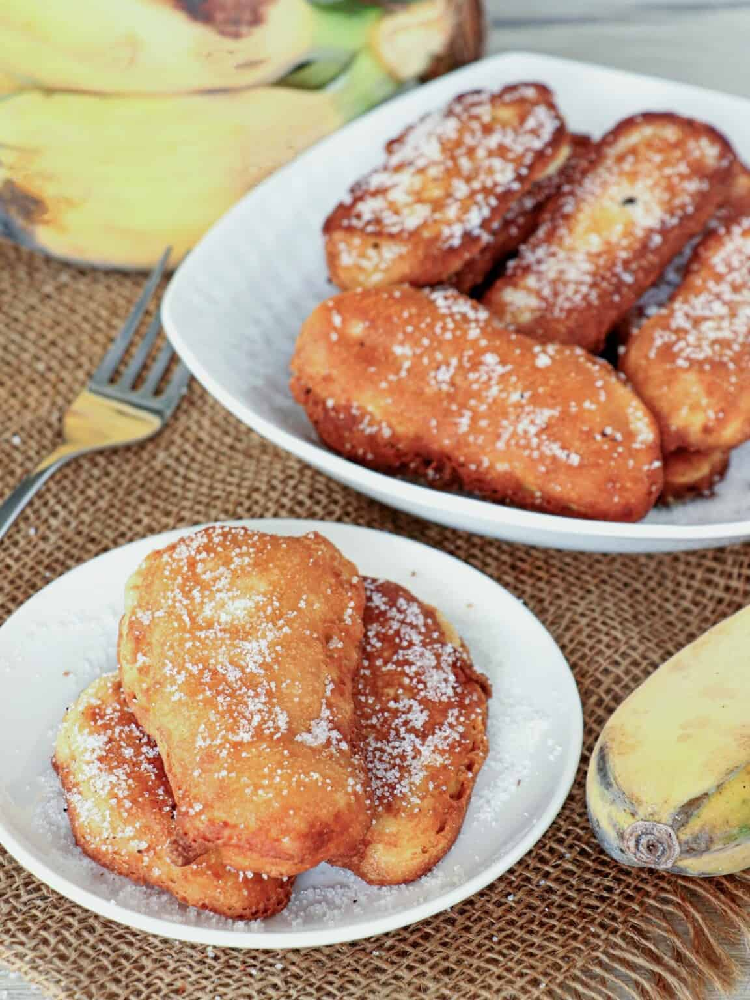

Maruya

Ingredients
| 1 cup flour |
| ½ cup sugar |
| 1 cup cold milk |
| 6 ripe but firm saba bananas, peeled and sliced lengthwise into about ¼ inch-thick |
| 2 tablespoons butter, melted |
Preparation
| Step 1 |
| In a bowl, sift together flour, ¼ cup of the sugar, baking powder, and salt.n a large bowl, beat egg. Add milk and butter and whisk together until blended. |
| Step 2 |
| Add flour mixture to milk mixture and stir until just moistened. DO NOT OVERMIX.n a pan over medium heat, heat oil. |
| Step 3 |
| Dip banana slices into batter to fully coat and gently slide into hot oil. |
| Step 4 |
| Cook for about 1 to 2 minutes on each side or until golden and crisp. Remove from pan and drain on paper towels. |